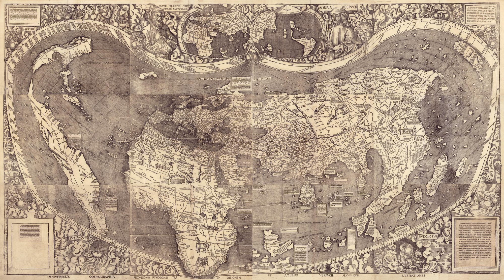
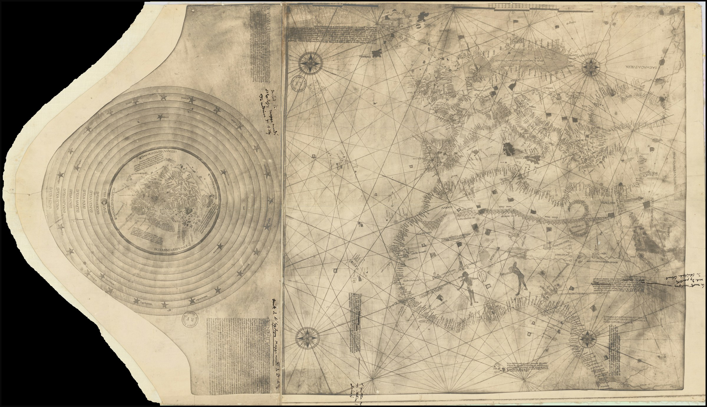
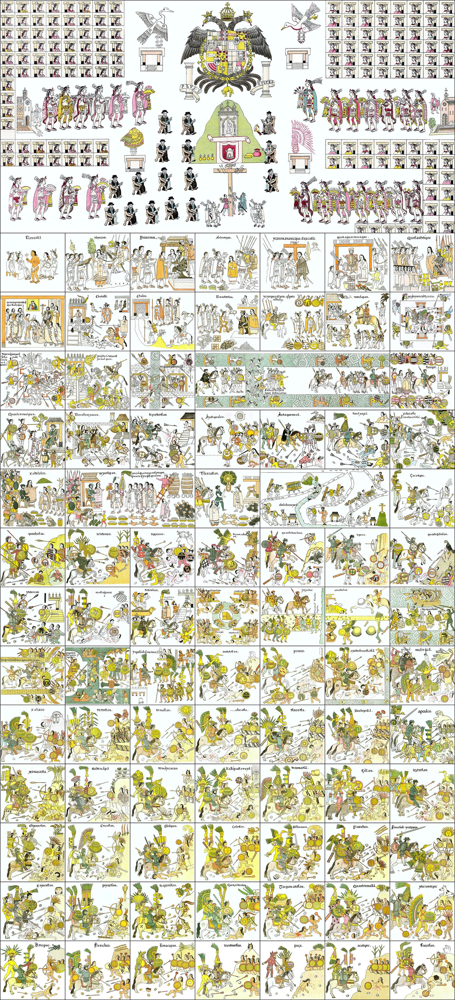
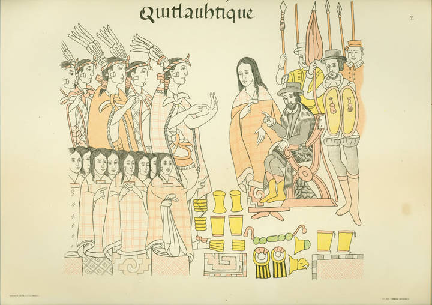
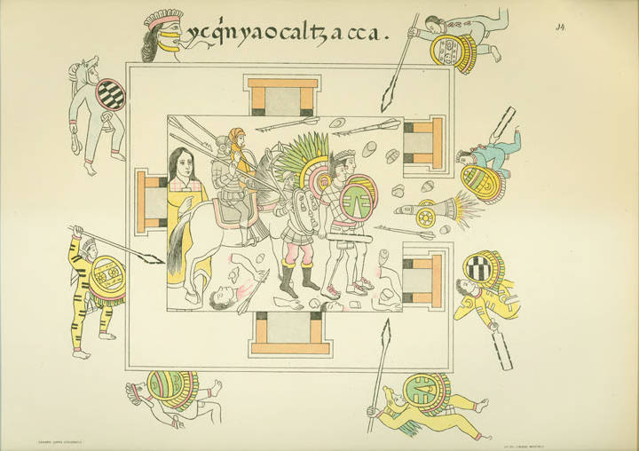
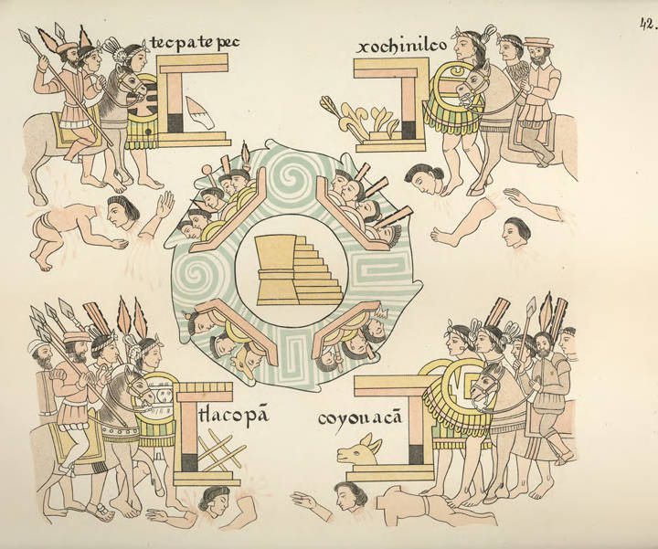

Aula 4
Aula 4Expansão europeia e visões da conquista
Aula 4Acesse os slides da Aula 4
Abra a apresentação no celular e acompanhe no seu ritmo.
 Aula 4
Aula 4Objetivos da aula
- Analisar os processos de expansão marítima europeia nos séculos XV e XVI.
- Caracterizar a presença portuguesa na costa africana e as ambições espanholas.
- Caracterizar as principais correntes historiográficas acerca da conquista europeia sobre as sociedades mexicas e incas (XVI).
- Analisar historicamente as relações entre invasores europeus e as variadas sociedades americanas na primeira metade do século XVI.
Aula 4Percurso da aula
- Parte 1 — Expansão marítima europeia: a Europa no século XV, Estados modernos, mercantilismo, reformas religiosas e a expansão ibérica a partir de Boxer (2002).
- Parte 2 — As várias visões da conquista: a expedição de Cortés, a historiografia da conquista e o debate a partir de Santos (2014).
Aula 4A Europa no século XV
O que os europeus conheciam do mundo?
Aula 4 Aula 4
Aula 4Planisfério de Waldseemüller
Primeiro mapa a nomear o continente como "América".

Aula 4Formação dos Estados modernos
- Séculos XIV–XV: crise do feudalismo — pestes, guerras, fome.
- Fortalecimento do poder monárquico sobre a nobreza feudal.
- Formação de monarquias centralizadas: Portugal, Castela/Aragão, França, Inglaterra.
- Novos instrumentos de poder: burocracia, exércitos permanentes, fiscalidade.
Aula 4Absolutismo e Estado moderno
- Concentração do poder político nas mãos do monarca.
- Alianças entre coroa e burguesia mercantil contra a nobreza feudal.
- Surgimento de cortes, conselhos reais e aparatos administrativos centralizados.
- Portugal e Espanha: primeiros exemplos de monarquias com projeto colonial coordenado pelo Estado.
Aula 4Mercantilismo
- A riqueza das nações mede-se pelo acúmulo de metais preciosos (ouro e prata).
- Balança comercial favorável: exportar mais do que importar.
- Intervenção estatal no comércio e na produção.
- Colônias: fornecedoras de matérias-primas e mercado consumidor para a metrópole.
Aula 4Mercantilismo e expansão marítima
"O comércio com o Oriente era controlado pelos mercadores italianos (Veneza, Gênova) e pelas rotas terrestres dominadas pelo Império Otomano."
A busca por novas rotas comerciais torna-se imperativo estratégico para as monarquias ibéricas.
Aula 4Reformas religiosas (séc. XVI)
- 1517: Martinho Lutero — as 95 Teses. Contestação das indulgências e da autoridade papal.
- Calvinismo (João Calvino, Genebra): ênfase na predestinação e na ética do trabalho.
- Anglicanismo (Inglaterra, 1534): ruptura de Henrique VIII com Roma.
Aula 4Reformas religiosas: impactos políticos
- Guerras religiosas na Europa: Guerra dos Trinta Anos (1618–1648).
- Contrarreforma (Concílio de Trento, 1545–1563): resposta católica, papel central dos jesuítas.
- Portugal e Espanha permanecem católicos — missão evangelizadora como justificativa da colonização.
- Inquisição como instrumento de controle religioso e político.
Aula 4A expansão marítima ibérica
BOXER, Charles R. O império marítimo português, 1415–1825. São Paulo: Companhia das Letras, 2002. [Cap. 1]
Aula 4Charles R. Boxer
Historiador britânico, maior autoridade do século XX sobre o império português.
Obras fundamentais: The Dutch Seaborne Empire (1965), The Portuguese Seaborne Empire (1969), O império marítimo português (ed. brasileira: 2002).
Aula 4Portugal: pioneiro da expansão
- 1415: Conquista de Ceuta — ponto de inflexão.
- Exploração sistemática da costa africana sob patrocínio da coroa.
- Infante D. Henrique ("o Navegador"): articulação entre coroa, nobreza e interesses mercantis.
- Ilhas atlânticas: Madeira (1419), Açores (1427), Cabo Verde (1456).
Aula 4A costa africana e o caminho para o Oriente
- 1441: primeiro carregamento de escravizados africanos para Portugal.
- 1488: Bartolomeu Dias dobra o Cabo das Tormentas (Boa Esperança).
- 1498: Vasco da Gama chega à Índia — nova rota para as especiarias.
- 1500: Pedro Álvares Cabral chega ao Brasil.
Aula 4A expansão espanhola
- Unificação de Castela e Aragão (1469): Isabel e Fernando — "Reis Católicos".
- 1492: financiamento da expedição de Cristóvão Colombo.
- Tratado de Tordesilhas (1494): divisão do mundo entre Portugal e Espanha.
- Expedições de conquista no Caribe, Mesoamérica e América do Sul (séc. XVI).
Aula 4Um mapa de Colombo?

Aula 4Motivações da expansão
- Econômicas: especiarias, metais preciosos, rotas comerciais alternativas.
- Políticas: prestígio das coroas, expansão do poder estatal.
- Religiosas: evangelização, cruzada contra o Islã, "missão civilizadora".
Aula 4O papel da tecnologia náutica
- Caravela: embarcação ágil, capaz de navegar contra o vento (vela latina).
- Aperfeiçoamento da bússola e do astrolábio.
- Cartografia: portulanos e mapas cada vez mais precisos.
- Artilharia naval: vantagem militar decisiva nos oceanos e nas costas africanas e asiáticas.
Aula 4Expansão marítima e escravidão africana
- O comércio de escravizados africanos começa antes da chegada às Américas.
- A costa africana torna-se espaço de trocas desiguais e violência colonial.
- A chegada às Américas intensifica exponencialmente a demanda por trabalho escravizado.
- Tráfico atlântico: consequência estrutural da expansão ibérica.
Aula 4Um processo ibérico compartilhado
"Os portugueses e os espanhóis tiveram precursores (mais ou menos isolados) na conquista dos oceanos Atlântico e Pacífico"BOXER, 2002, p. 31.
Aula 4Por que a Espanha chegou depois?
- Portugal expulsou os muçulmanos de seu território ~dois séculos antes da conquista de Granada (1492).
- Castela e Aragão viveram um "tempo de perturbações" no séc. XV que "contribuíram muito para impedir que os espanhóis competissem tão eficazmente com Portugal" (BOXER, 2002, p. 34).
- Unificação de Castela e Aragão (1469): Isabel e Fernando — base política para a expansão.
Aula 4A caravela como elo
"Foi navegando nas caravelas portuguesas que Colombo adquiriu ao menos parte da sua perícia na navegação de alto-mar."BOXER, 2002, p. 43.
O instrumento técnico da expansão portuguesa tornou-se o veículo da invasão espanhola das Américas.
Aula 4A Inter caetera e o Tratado de Tordesilhas
- Após 1492, a Espanha aciona a mesma lógica jurídica papal utilizada por Portugal desde 1452.
- A Inter caetera concede às coroas espanholas o monopólio sobre os territórios "descobertos" a oeste.
- Tordesilhas: divisão negociada do mundo entre as duas coroas ibéricas — competição e cooperação simultâneas.
Aula 4A carta de dom Manuel
Ao retornar da Índia, Vasco da Gama envia notícias de sucesso. Dom Manuel escreve carta jubilosa a Fernando e Isabel:
"[...] enormes quantidades de cravo, canela e outras especiarias [...] rubis e toda espécie de pedras preciosas e terras onde há minas de ouro."BOXER, 2002, pp. 52-53.
Aula 4A carta de dom Manuel
Dom Manuel intitula-se "Senhor da Guiné e da conquista, navegação e comércio da Etiópia, Arábia, Pérsia e Índia" — anunciando o triunfo precisamente aos soberanos espanhóis, seis anos após Colombo.
Aula 4O que levou à expansão
- Estados absolutistas + mercantilismo = expansão como política de Estado.
- Reformas religiosas: reforçam a missão "civilizadora" católica das coroas ibéricas.
- Portugal precede a Espanha na exploração atlântica.
- A expansão conecta três mundos: Europa, África e Américas.
Aula 4As várias visões da conquista
Base de leitura: SANTOS, Eduardo Natalino dos. "As conquistas de México-Tenochtitlan e da Nova Espanha". História Unisinos, v. 18, n. 2, 2014.
Aula 4Conquista das ilhas do Caribe
- Ouro de aluvião
- Escravização
- Extermínio
- Início de colonização: Cuba — sede de governo; base para expansão para o continente.
Aula 4A expedição de Hernán Cortés
Aula 4Primeira fase
- Aliança e contatos iniciais com povos locais (1519)
- Aliança com os tlaxcaltecas
Aula 4Segunda fase
- Castelhanos convidados em México-Tenochtitlan (1519–1520): chegam na cidade com dez mil indígenas e 500 castelhanos;
- Sequestro dos chefes; Massacre do Templo Mayor; Noche Triste.
Aula 4Terceira fase
- Recomposição de forças (1520–1521): composição de novas alianças e epidemias de varíola.
Aula 4Quarta fase
- Sítio de México-Tenochtitlan (maio a agosto de 1521);
- Coalização de 20 mil indígenas e mil castelhanos;
- Derrota dos mexicas.
Aula 4 Aula 4
Aula 4Visões da conquista
- Século XIX: visão eurocêntrica, civilizatória; heroísmo e superioridade técnica e militar dos castelhanos;
- Pierre Chaunu: visão de "guerra de conquista"; factual;
- Rugiero Romano: Armas + Igreja + desestruturação social.
Aula 4Visões da conquista
- História dos vencidos: Miguel León-Portilla e Nathan Wachtel;
- Hibridismo cultural: Serge Gruzinski;
- Eduardo Natalino dos Santos: alianças e guerras, tensões e negociações.
Aula 4História dos Vencidos
- Busca trazer as interpretações indígenas da conquista espanhola;
- Crítica ao eurocentrismo;
- Incorporação das perspectivas indígenas, solenemente ignoradas até então;
- Ouvir as vozes dos povos indígenas da América Latina; visibilidade à resistência indígena.
Aula 4À história dos vencidos
- Apresenta a conquista militar como uma "obra realizada exclusivamente pelos castelhanos";
- Atenção apenas nos indígenas derrotados, como se esses representassem a totalidade dos povos.
Aula 4Hibridismo Cultural
- Vertente de história cultural influenciada pela história dos vencidos;
- Buscava explicar as transformações socioculturais das populações ameríndias após o contato;
- "Os conceitos (mestiçagem e hibridismo) dariam conta de explicar a constituição das novas sociedades coloniais e a atuação de grande parte de seus agentes históricos."
Aula 4Ao hibridismo cultural
- Apresenta os povos indígenas como "não totalmente derrotados no âmbito cultural ou social", mas mantém os mesmos problemas da história dos vencidos;
- Entende a conquista da cidade do México como a conquista de todo o território da Nova Espanha;
- Identifica os diversos povos indígenas com os mexicas: simplificação;
- Opõe dois tipos de agentes ou forças políticas: índios X espanhóis.
Aula 4A tese
"Por meio da análise de fontes nahuas […], mostramos que as guerras e alianças realizadas entre castelhanos e altepeme [plural de altepetl, unidades político-territoriais] mesoamericanos para consumar a queda de México-Tenochtitlan, entre 1519 e 1521, lançaram as bases políticas e militares que permitiam a conquista, ao longo do século XVI, de grande parte dos territórios que viriam a ser a Nova Espanha, a qual não se deu de forma automática a partir da queda da capital mexica."(SANTOS, 2014, p. 221)
Aula 4
Aula 4
Aula 4 Aula 4
Aula 4 Aula 4
Aula 4 Aula 4
Aula 4 Aula 4
Aula 4Townsend (2006)
TOWNSEND, Camilla. Malintzin's choices: an Indian woman in the conquest of Mexico. Albuquerque: University of New Mexico Press, 2006.
Aula 4La Malinche: quem foi?
- Também conhecida como Malintzin ou Doña Marina;
- Mulher indígena nahua entregue aos espanhóis em 1519;
- Se tornou intérprete, conselheira e companheira de Hernán Cortés;
- Figura controversa: traidora ou sobrevivente?
Aula 4Breve história
- Nascida por volta de 1500 na região de Coatzacoalcos;
- Vendida como escravizada ainda jovem e levada para os maias;
- Em 1519, entregue aos espanhóis pelos senhores de Tabasco;
- Aprendeu espanhol rapidamente e tornou-se a principal intérprete de Cortés.
Aula 4Casamento e descendência
- Teve um filho com Cortés: Martín Cortés, um dos primeiros mestiços de destaque na Nova Espanha;
- Após a conquista, foi dada em casamento a Juan Jaramillo, um dos capitães espanhóis;
- Com Jaramillo, teve uma filha chamada María Jaramillo;
- O casamento pode ter sido uma estratégia para garantir status social na nova ordem colonial.
Aula 4Importância como intérprete
- Facilitou a comunicação entre os espanhóis e diferentes povos indígenas;
- Usou sua fluência em maia e náuatle para traduzir entre os povos e Cortés;
- Papel essencial nas negociações políticas e alianças entre os espanhóis e grupos indígenas rivais dos mexicas;
- Sua habilidade como tradutora ajudou na queda de Tenochtitlán em 1521.
Aula 4
Aula 4 Aula 4
Aula 4
Aula 4 Aula 4
Aula 4Referências
BOXER, Charles R. O império marítimo português, 1415–1825. São Paulo: Companhia das Letras, 2002. [Cap. 1]
SANTOS, Eduardo Natalino dos. "As conquistas de México-Tenochtitlan e da Nova Espanha". História Unisinos, v. 18, n. 2, 2014.
TOWNSEND, Camilla. Malintzin's choices: an Indian woman in the conquest of Mexico. Albuquerque: University of New Mexico Press, 2006.
Relatos Astecas da Conquista. Trechos selecionados.
Aula 4Formação da sociedade colonial espanhola (XVI–XVIII)
Módulo II — Conquistas, Colonização e Resistências.